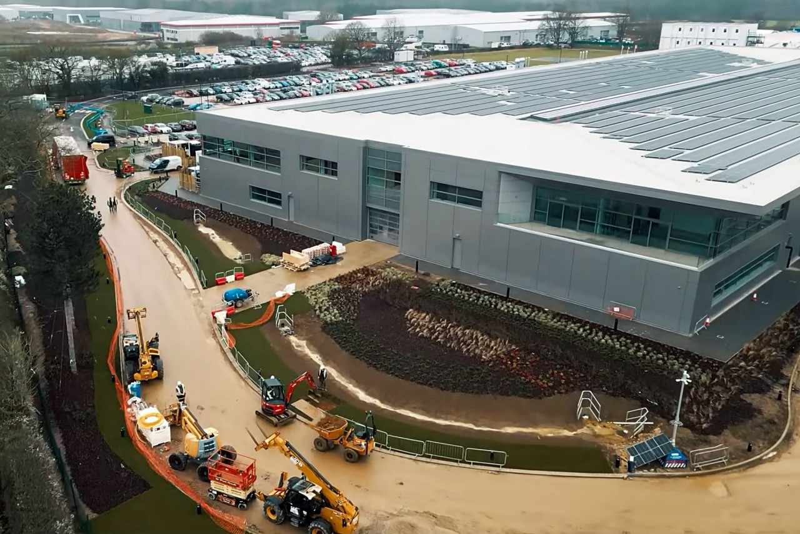

Aston Martin anuncia una ambiciosa renovación de su fábrica y túnel de viento, con el objetivo de fortalecer su capacidad de desarrollo y producción en la Fórmula 1. El equipo británico ha revelado planes detallados para modernizar y ampliar sus instalaciones, apostando por la innovación y la tecnología de vanguardia.
La fábrica de Aston Martin, ubicada en Silverstone, experimentará una importante actualización para optimizar la eficiencia en la producción de componentes clave de los monoplazas. Se implementarán nuevas líneas de montaje automatizadas, así como tecnologías de fabricación aditiva para mejorar la agilidad y la precisión en la creación de piezas aerodinámicas.
En paralelo, el equipo también realizará mejoras significativas en su túnel de viento. Este proyecto incluye la adquisición de equipos de última generación y la ampliación de la infraestructura existente para permitir pruebas más exhaustivas y precisas.
Se espera que estas mejoras impulsen el desarrollo aerodinámico del monoplaza, brindando a los ingenieros una mayor capacidad para optimizar el rendimiento en pista.
Lawrence Stroll, director ejecutivo de Aston Martin F1 Team, comentó sobre estos avances: 'Estas inversiones son fundamentales para nuestro crecimiento y competitividad en la Fórmula 1. La modernización de nuestra fábrica y el túnel de viento nos permitirá estar a la vanguardia en términos de innovación y desarrollo técnico'.
Se espera que estas actualizaciones impulsen el rendimiento del equipo en la pista y fortalezcan su posición en el altamente competitivo mundo de la Fórmula 1."
